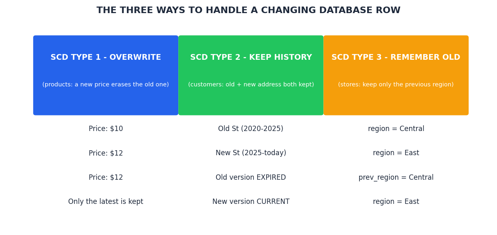
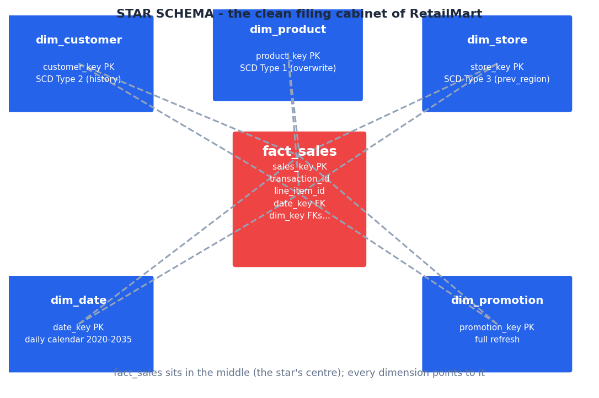
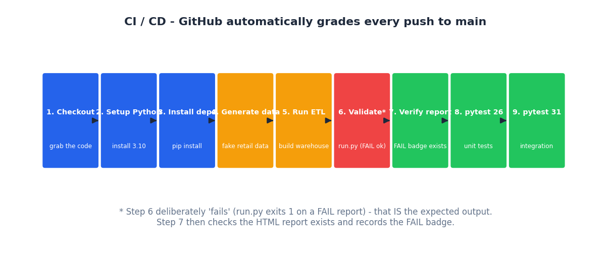
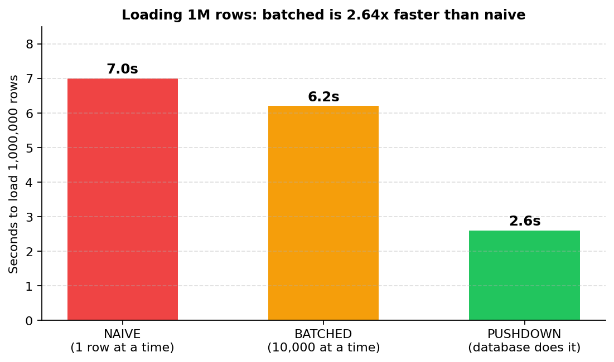

This is a testing framework — so a "FAIL" report means it's working. An ETL Tester's job isn't to make the data clean; it's to find what's broken and prove it.
The pipeline

The framework generates dirty data on purpose — 100K transactions with deliberate defects baked in (a duplicate transaction, NULL customer IDs, negative quantities) — emulates real Informatica IICS mappings in Python, then validates source vs target with 7 checks.
python generate_data.py
# 2. Run the "IICS" mappings — builds the warehouse
python simulate_etl.py
# 3. Run the validation framework
python run.py --date 2026-08-27 # summary
python run.py --date 2026-08-27 --verbose # per-check logs
python run.py --date 2026-08-27 --sample 10000 # sampled row compare
Slowly Changing Dimensions

SCD Type 1 — overwrite
Product updates overwrite in place. No history kept — current state only.
SCD Type 2 — versioned
Editing a customer expires the old version and inserts a new current one, with effective dates.
SCD Type 3 — previous
Keeps the previous value in a separate column alongside the current one.
Star schema warehouse

Source data lands in a retail_dwh.db star schema: dim_customer, dim_product, dim_store, dim_date, and fact_sales — plus audit, watermark, and error-detail tables.
What the report catches
The data is intentionally dirty, so the report shows real, workable findings:
| Check | Result | Why |
|---|---|---|
| dim_customer row/row-by-row/dupes | ✅ PASS | SCD Type 2 loaded correctly |
| dim_product row/row-by-row/dupes | ✅ PASS | SCD Type 1 loaded correctly |
| dim_product schema | ⚠️ 2 extra + 1 type | target has product_key/is_active, REAL vs FLOAT |
| fact_sales row count | ❌ +2 in source | the deliberate duplicate transaction inflates the source join |
| fact_sales column sums | ❌ | duplicate rows contribute extra sums |
| fact_sales NULL customer_key | ❌ 5,898 | ~2% of source customers are missing → NULL key |
| fact_sales negative quantity | ❌ 3,087 | ~1% deliberate bad rows |
That is the point: a real validation framework finds the real problems. In a real project you'd then go fix the ETL or the source data and re-run.
Incremental loads & watermark
The fact load is incremental: it reads only rows newer than the watermark. The tests verify that a second run loads nothing new — the watermark does not double-load.
CI/CD on every push

A GitHub Actions workflow builds, validates, and runs the full test suite on every push.
Performance: 2.64× faster loads

Naive row-by-row inserts vs batched inserts vs pushdown to SQL — the benchmark measures all three on a 1M-row load.
The 7 validation checks
1. Row counts
Source vs target — every table, every run.
2. Column sums
Financial & metric columns reconcile.
3. MD5 row-by-row hash
Proves each row matches, byte for byte.
4. Duplicates
Finds keys that should be unique but aren't.
5. Referential integrity
Foreign keys point at real parents.
6. NULL / negatives
Catches missing and impossible values.
7. Schema comparison
Column drift between source and target.
14 practice tasks
Every task ships with a markdown spec and a runnable verification script — star schema design, SQL validation queries, SCD Type 2/3 mapping, error handling, incremental watermark, performance benchmarking, full reconciliation, schema comparison, CI/CD docs, and an end-to-end runner.